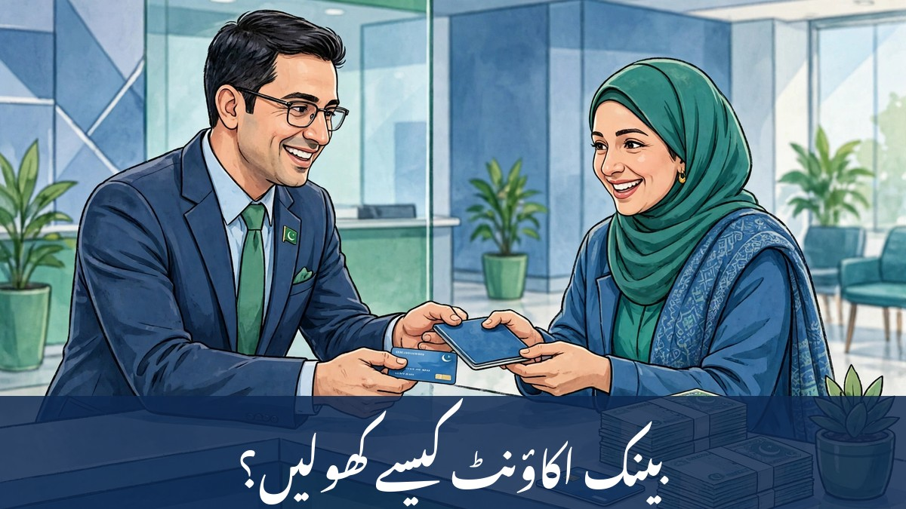

پاکستان میں بینک اکاؤنٹ کیسے کھولیں؟ — مکمل اردو گائیڈ

آج کے دور میں بینک اکاؤنٹ صرف امیروں کی ضرورت نہیں رہا — تنخواہ وصول کرنے، بل ادا کرنے، رقم محفوظ رکھنے اور سرکاری وظائف لینے کے لیے ہر شہری کو اس کی ضرورت پڑتی ہے۔ اس کے باوجود بہت سے لوگ سمجھتے ہیں کہ اکاؤنٹ کھولنا مشکل یا مہنگا کام ہے۔ حقیقت یہ ہے کہ پاکستان میں عام شہری کے لیے اکاؤنٹ کھولنا اب پہلے سے کہیں زیادہ آسان ہے، خاص طور پر آسان اکاؤنٹ کی سہولت کے بعد۔ اس رہنمائی میں اقسام، دستاویزات، برانچ اور آن لائن طریقہ، فیس اور فراڈ سے بچاؤ — سب کچھ آسان اردو میں بیان کیا گیا ہے۔
1۔ بینک اکاؤنٹ کیوں ضروری ہے؟
بینک اکاؤنٹ آپ کے پیسے کو محفوظ رکھنے کے ساتھ کئی سہولتیں دیتا ہے:
- تنخواہ اور ادائیگیاں: اکثر ادارے تنخواہ براہِ راست بینک اکاؤنٹ میں بھیجتے ہیں، اور فری لانسرز کو بیرونِ ملک سے ادائیگی بھی اکاؤنٹ ہی میں آتی ہے۔
- محفوظ بچت: گھر میں رکھی رقم چوری کا خطرہ رکھتی ہے؛ بینک میں رقم محفوظ رہتی ہے اور سیونگ اکاؤنٹ پر منافع بھی ملتا ہے۔
- آن لائن ادائیگیاں: موبائل ری چارج، بجلی و گیس کے بل، آن لائن خریداری اور رقم کی منتقلی — سب کچھ اکاؤنٹ اور موبائل ایپ سے ممکن ہے۔
- سرکاری ادائیگیاں: کئی سرکاری اسکیموں اور وظائف کی رقم بینک اکاؤنٹ کے ذریعے ہی ملتی ہے۔
- مالی ریکارڈ: بینک اسٹیٹمنٹ آپ کی آمدن کا ثبوت بنتی ہے، جو قرض یا ویزا جیسے کاموں میں کام آتی ہے۔
2۔ اکاؤنٹ کی اقسام — آپ کے لیے کون سا بہتر؟
اکاؤنٹ کھولنے سے پہلے یہ جاننا ضروری ہے کہ کون سی قسم آپ کی ضرورت کے مطابق ہے:
- کرنٹ اکاؤنٹ: کاروبار یا روزانہ لین دین کے لیے؛ اس پر عموماً منافع نہیں ملتا۔
- سیونگ اکاؤنٹ: عام شہریوں کے لیے بہترین؛ اس پر بینک منافع دیتا ہے۔
- آسان اکاؤنٹ: اسٹیٹ بینک کی ہدایت پر سادہ اکاؤنٹ — کم دستاویزات، کم از کم بیلنس کی شرط نہیں۔ پہلی بار اکاؤنٹ کھولنے والوں کے لیے بہترین انتخاب ہے۔
- اسلامی اکاؤنٹ: سود سے بچنے والوں کے لیے اسلامی بینکاری کے اکاؤنٹ شرعی اصولوں پر چلتے ہیں۔
- ڈیجیٹل اکاؤنٹ: کئی بینک موبائل ایپ سے گھر بیٹھے اکاؤنٹ کھولنے کی سہولت دیتے ہیں، جس میں برانچ جانے کی ضرورت نہیں پڑتی۔
3۔ درکار دستاویزات
بینک اکاؤنٹ کھولنے کے لیے یہ کاغذات درکار ہوتے ہیں:
- اصل شناختی کارڈ (CNIC): کمپیوٹرائزڈ قومی شناختی کارڈ لازمی ہے۔
- آمدن کا ذریعہ: تنخواہ کی سلپ، ملازمت یا کاروبار کا ثبوت — بینک یہ معلومات قانون کے تحت پوچھتا ہے۔
- رہائش کا ثبوت: بجلی، گیس یا ٹیلیفون کا بل، یا کرایہ نامہ۔
- تصویر: پاسپورٹ سائز تصاویر (عام طور پر ایک یا دو)۔
- موبائل نمبر: آپ کے نام پر رجسٹرڈ نمبر، جس پر اطلاع اور OTP آئے گا۔
آسان اکاؤنٹ کے لیے صرف شناختی کارڈ اور بنیادی معلومات عموماً کافی ہوتی ہیں۔
4۔ برانچ میں اکاؤنٹ کھولنے کا قدم بہ قدم طریقہ
روایتی طریقہ اب بھی سب سے عام ہے:
- قدم 1: اپنی پسند کا بینک اور قریبی برانچ منتخب کریں — دیکھیں کہ کس بینک کی موبائل ایپ اچھی ہے اور ATM آپ کے علاقے میں قریب ہے۔
- قدم 2: اکاؤنٹ اوپننگ فارم درست معلومات سے پُر کریں — نام کی اسپیلنگ شناختی کارڈ کے مطابق ہونی چاہیے۔
- قدم 3: دستاویزات جمع کرائیں اور بائیومیٹرک تصدیق کروائیں۔
- قدم 4: ابتدائی رقم جمع کرائیں (اگر آپ کے اکاؤنٹ کی قسم میں لازم ہو) — آسان اکاؤنٹ میں یہ شرط عموماً نہیں ہوتی۔
- قدم 5: چند دن میں اکاؤنٹ نمبر اور IBAN جاری ہو جائے گا؛ ATM کارڈ اور چیک بک ڈاک یا برانچ سے ملے گی۔
5۔ آن لائن یا موبائل ایپ سے اکاؤنٹ کیسے کھولیں؟
کئی بینک ڈیجیٹل اکاؤنٹ کی سہولت دیتے ہیں: آفیشل ایپ ڈاؤن لوڈ کریں، موبائل نمبر اور شناختی کارڈ نمبر درج کریں، کارڈ کی تصویر اور لائیو سیلفی اپ لوڈ کریں، پھر ویڈیو کال یا بائیومیٹرک سے تصدیق مکمل کریں۔ اکاؤنٹ فوری یا چند گھنٹوں میں فعال ہو جاتا ہے۔ احتیاط: ایپ ہمیشہ آفیشل پلے اسٹور یا ایپ اسٹور سے لیں — کسی لنک یا واٹس ایپ سے بھیجی گئی ایپ کبھی انسٹال نہ کریں۔
6۔ فیس اور چارجز — پہلے جان لیں
ہر بینک کے چارجز مختلف ہوتے ہیں، اس لیے پہلے ضرور معلوم کر لیں:
- مینٹیننس چارجز: بعض اکاؤنٹس پر سالانہ یا ماہانہ فیس لگتی ہے؛ آسان اکاؤنٹ میں یہ عموماً نہیں ہوتی۔
- ATM کارڈ کی سالانہ فیس: ڈیبٹ کارڈ جاری کرنے اور ہر سال تجدید کی فیس الگ سے ہوتی ہے۔
- SMS الرٹ چارجز: ہر ٹرانزیکشن کی SMS اطلاع کی معمولی فیس ہو سکتی ہے۔
- کم از کم بیلنس: کچھ اکاؤنٹس میں کم از کم رقم رکھنا ضروری ہوتا ہے، ورنہ جرمانہ لگ سکتا ہے۔
بینک کا شیڈول آف چارجز اس کی ویب سائٹ پر ہوتا ہے — فارم بھرنے سے پہلے اسے ضرور دیکھ لیں۔
7۔ اکاؤنٹ کھلنے کے بعد کیا ملے گا؟
- IBAN نمبر: بین الاقوامی بینک اکاؤنٹ نمبر، جس سے ملک کے اندر اور باہر سے رقم وصول کی جا سکتی ہے۔
- ڈیبٹ / ATM کارڈ: ATM سے رقم نکالنے اور دکانوں پر ادائیگی کے لیے۔
- موبائل بینکنگ ایپ: بیلنس، رقم منتقلی، بل ادائیگی اور موبائل لوڈ — سب موبائل سے۔
- چیک بک (اختیاری): چیک سے ادائیگی کے لیے درخواست پر جاری ہوتی ہے۔
- بینک اسٹیٹمنٹ: تمام لین دین کا ریکارڈ، جو ایپ یا برانچ سے مل سکتا ہے۔
8۔ عام غلطیاں جن سے بچنا چاہیے
- فارم پر نام یا تاریخِ پیدائش شناختی کارڈ سے مختلف لکھنا — بعد میں اصلاح کی زحمت اٹھانی پڑتی ہے۔
- کسی دوسرے شخص کے موبائل نمبر پر اکاؤنٹ رجسٹر کروانا — OTP اور اطلاعات غلط شخص تک پہنچیں گی۔
- بغیر پڑھے شرائط و ضوابط پر دستخط کرنا — فیس اور حدود بعد میں پریشان کرتی ہیں۔
- اکاؤنٹ کھول کر برسوں غیر فعال چھوڑ دینا — اس پر چارجز لگ سکتے ہیں اور بحالی میں وقت لگتا ہے۔
9۔ آپ کا عملی چیک لسٹ
اس فہرست کو محفوظ کر لیں: پہلے — ضرورت کے مطابق اکاؤنٹ کی قسم منتخب کریں (پہلی بار کے لیے آسان اکاؤنٹ بہترین ہے)۔ دوسرا — شناختی کارڈ، آمدن کا ثبوت، رہائش کا ثبوت اور تصاویر تیار رکھیں۔ تیسرا — برانچ میں فارم جمع کرائیں یا آفیشل ایپ سے آن لائن درخواست دیں اور بائیومیٹرک تصدیق مکمل کریں۔ چوتھا — اکاؤنٹ نمبر اور IBAN ملنے پر موبائل ایپ فعال کریں، ATM کارڈ وصول کریں اور PIN فوری تبدیل کریں۔ یہ چار قدم مکمل ہوتے ہی آپ کا بینک اکاؤنٹ تیار ہوگا — رقم محفوظ، ادائیگیاں آسان اور مالی ریکارڈ مضبوط۔